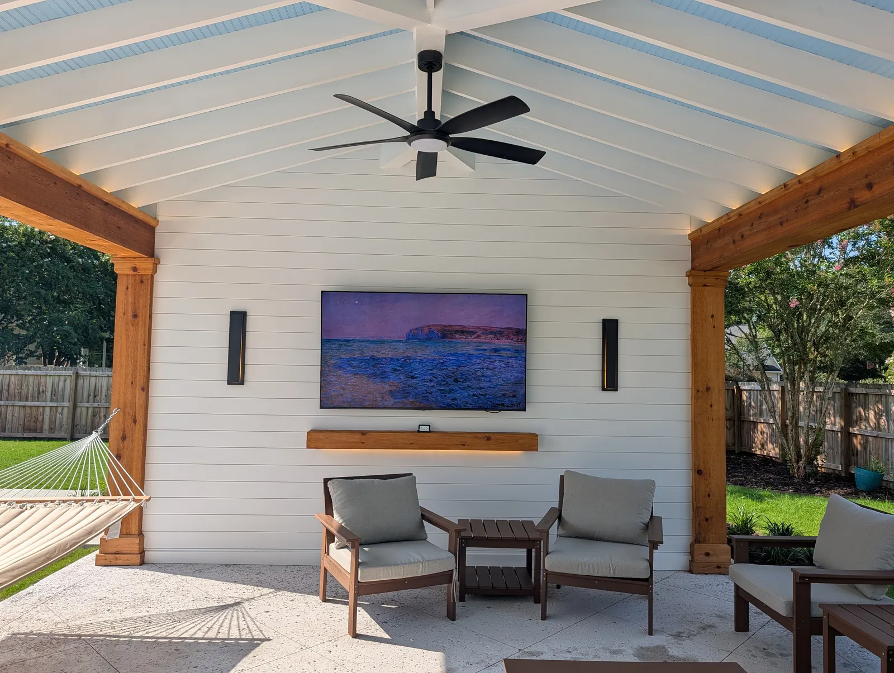

Outdoor Living Design & Installation in Charleston, SC (Patios, Kitchens & More)
Outdoor living in Charleston is not a seasonal thing. With mild winters, a long spring and fall, and summers that are hot but manageable with shade, a well-designed outdoor space gets used for more of the year here than almost anywhere else in the country. When you invest in a quality outdoor living installation, you are effectively adding livable square footage to your home.
But getting there requires more than picking out pavers and a grill. A complete outdoor living project involves grading and drainage work before the first stone is laid, permit coordination, gas and electrical rough-ins, and design decisions that affect how the space functions for years. It also requires a contractor who can execute every phase of the project with the same level of quality rather than handing off portions to subcontractors with no stake in the finished result.
At Cramers Landscaping, we design and install complete outdoor living spaces throughout Charleston and the Lowcountry. This page covers what a full outdoor living project involves, what distinguishes a well-executed installation from a poor one, and what our process looks like from the first consultation to the final walkthrough.
What Is an Outdoor Living Space?

An outdoor living space is an intentionally designed outdoor area built to function as an extension of the home. It typically combines hardscape (patios, decks, walkways, and walls), outdoor structures (pavilions, pergolas, covered patios), cooking and entertainment features (outdoor kitchens, fireplaces, fire pits), and landscape elements (planting beds, trees, irrigation, lighting) into a cohesive environment.
The difference between a well-designed outdoor living space and a patio with furniture on it is intentionality. A complete outdoor living installation has a defined room with a purpose: you know where the dining area is, where the cooking happens, where people gather around the fire, and where the property transitions back to lawn or landscape. Everything is proportional, connected, and designed to last.
For Charleston homeowners specifically, outdoor living spaces also need to handle the Lowcountry climate: clay soil conditions, heavy seasonal rainfall, coastal humidity, and the occasional flooding event. A beautiful outdoor kitchen that sits on a base with inadequate drainage is a problem waiting to happen. Every outdoor living project we build addresses those site conditions from the ground up.
What a Complete Outdoor Living Installation Includes
The scope of a full outdoor living project varies by property and budget, but here are the major components we design and install:
Hardscape Foundation
The patio is the floor of the outdoor room. It needs to be level, properly drained, and built on a base that will not shift or settle over time. We install patios in concrete pavers, brick, travertine, marble, and bluestone depending on the project's aesthetic and functional requirements. Adjacent walkways, steps, and retaining walls are designed and installed as part of the same scope.
Outdoor Structures
A pavilion, pergola, or covered patio creates the overhead element that defines the outdoor room and makes the space usable year-round. Cramers designs and builds both open-roof pergolas and fully covered pavilions with solid metal roofs. We also install custom-fabricated aluminum and cedar structures. The structure choice depends on the intended use of the space and the level of weather protection the client wants.
Outdoor Kitchen
An outdoor kitchen integrates cooking, preparation, and storage into the hardscape design. We build kitchen frames from concrete block and metal framing, both of which resist coastal moisture. Granite and quartzite are our recommended countertop materials for Charleston's climate: they handle sun exposure and humidity without degrading. Popular appliances include built-in grills, griddles, Green Eggs, refrigerators, and sinks with plumbing.
Fire Features
A fireplace or fire pit creates a focal point and extends the usability of the outdoor space through Charleston's cooler months. Built-in masonry fireplaces, gas fire tables, and freestanding fire pit bowls all have their place depending on the project's style and how the space is used.
Pool Deck Integration
For properties with an existing or planned pool, the pool deck ties into the outdoor living space as the immediate transition zone between the water and the entertainment area. Travertine is the most requested material for pool decks in our market because it stays cool underfoot in direct sun and has a high-end aesthetic that suits both traditional and modern homes.
Landscape and Lighting
Complete outdoor living projects include planting beds, trees, and ground cover to frame and soften the hardscape elements. Landscape lighting is integrated throughout, covering path lighting, structural uplighting, and dining area illumination. Irrigation is added where new plantings require it.
What Separates Cramers From the Guy Down the Street

We hear this question in nearly every consultation, and we give an honest answer every time.
Communication and Personalization
The experience a client has working with us starts before the first shovel. We are thorough in our consultation process because we have seen firsthand what happens when a project starts without a clear, shared understanding of the scope and outcome. We ask detailed questions about how you plan to use the space, what your household looks like, what your home's architecture calls for, and what your timeline and budget constraints are. The design we produce reflects those answers, not a default template.
Throughout the project, we communicate at every significant stage. Our clients always know what is happening, what is coming next, and what decisions need to be made. That transparency is not universal in this industry, and the difference is felt.
Design That Lasts
Our goal is not just to build something that looks good in photos the day it is finished. We design for how it will perform five and ten years from now. That means the right base preparation for the soil conditions on your property, the right material selection for the coastal climate, and structural choices that account for the live load of what will actually be placed and used in the space.
We stand behind our work. If an issue appears after installation, we address it. That commitment is backed by real craftsmanship and real planning, not a warranty buried in fine print.
Phased Project Planning
Many clients have a full vision but cannot execute the entire project at once. We build projects in phases regularly, and we do it in a specific way: we design the complete final project first, then build the first phase with the final version already planned.
This matters because a patio that was not designed with a future kitchen or pavilion in mind will often need to be modified to accommodate those additions, which costs money and requires tearing into finished work. When we design the final space upfront, the gas line, electrical conduit, and structural anchor points for future additions are built into Phase 1. When you are ready for Phase 2, it connects cleanly without extra cost or disruption.
The Work Clients Do Not See (But Pay For)
Every significant outdoor living project involves preparation and coordination work that is invisible in the finished product but essential to how it performs.
Drainage and Grading
Before any hardscape goes down, we assess the lot for drainage. Charleston's clay soils do not absorb water quickly, and properties with improper grade can hold standing water that damages hardscape, erodes soil, and creates liability. We regrade where necessary, install French drains or catch basins where needed, and design every patio and walkway with appropriate pitch to move water away from structures and the home's foundation.
Proper Subbase Installation
The base preparation under a patio or pool deck is where many budget contractors cut corners, and it is where failures originate. We use granite aggregate for our subbases, specifically to prevent root intrusion under pavers, and we compact in lifts to achieve a stable foundation. For precision applications like marble or travertine pool decks, we pour a concrete subbase with a mortar set on top. Geotextile fabric is installed beneath the subbase where soil conditions require it.
Gas, Electrical, and Plumbing Rough-Ins
Any project that includes an outdoor kitchen, fireplace, lighting, or irrigation requires utility coordination before the hardscape is installed. We handle gas line routing for kitchens and fire features, electrical conduit for lighting and appliances, and plumbing rough-ins for sinks and outdoor showers. These are planned during design and installed during construction, not added as afterthoughts that require cutting into finished work.
Permitting and Engineering
Outdoor structures such as pavilions and covered patios require building permits in Charleston and the surrounding municipalities. For larger structures, engineer drawings and plat surveys may also be required. We manage the permitting process and coordinate with any required engineers. Our clients do not have to navigate that on their own, and our projects do not start without the required approvals in place.
Why the Lowcountry Requires Local Expertise

The challenges that are specific to Charleston properties, clay soils, high water tables, coastal humidity, flooding risk, historic preservation requirements, and tidal influences in the sea islands, require a contractor who builds here regularly and understands what those conditions demand.
A contractor who does excellent work in the Piedmont or the Upstate may have no experience designing drainage solutions for a waterfront property in Johns Island or navigating the design guidelines for a historic property downtown. Material selections that work in drier markets fail faster in the Lowcountry's humidity and salt air. Base preparation that is adequate on stable upland soils is insufficient on the expansive clays and near-coastal conditions common throughout Charleston County.
We build in this market exclusively. Our knowledge of what works, and what does not, comes from years of projects across every neighborhood and property type in the area, including Kiawah Island, Isle of Palms, and North Charleston.
Frequently Asked Questions
How do I know if my backyard can accommodate an outdoor kitchen or pavilion?
The best answer comes from a site visit. We look at the available space, the setback requirements for your municipality, the grade and drainage situation, and the existing utilities. Some properties have more constraints than others, but most can accommodate at least a well-designed kitchen setup or covered structure of some kind. We will tell you honestly what is possible before we develop a design.
Can you phase a large outdoor living project?
Yes, and we do this regularly. The key is to design the complete final version first so that each phase connects to the next without rework. We establish the gas lines, electrical rough-ins, and structural footings for future additions during the initial phase so the additions are planned for, not improvised.
What is the difference between your outdoor kitchens and what a pool company might build alongside a pool installation?
Pool companies are excellent at building pools. Outdoor kitchens, pavilions, and full outdoor living installations are a specialty that requires different expertise in construction methods, drainage, material selection, and design. We see pool companies' work regularly when clients ask us to add a kitchen or pavilion to an existing pool area, and the differences in base preparation, material quality, and finish work are often significant. Our outdoor living installations are purpose-built by a team that does this work specifically.
Do you handle permitting?
Yes. We manage the permitting process for all structures that require it and coordinate with any required engineers. Our projects do not proceed without the appropriate permits in place.
What should I budget for a full outdoor living installation in Charleston?
It depends heavily on the scope. A covered patio with a basic kitchen starts in the $40,000 to $60,000 range. A complete outdoor living build including a pavilion, full kitchen, fireplace, pool deck, irrigation, and landscape lighting in a premium market like Kiawah Island will run significantly higher. We provide a detailed estimate after the consultation and site visit, with clear breakdowns for each component.
Talk to an Outdoor Living Contractor in Charleston
A complete outdoor living space is one of the highest-return investments you can make in your Charleston property, both in terms of daily quality of life and long-term value. Getting it right requires a contractor who plans thoroughly, builds carefully, and stands behind the work.
Contact Cramers Landscaping to schedule a consultation. We will visit your property, assess the site, and develop a design plan that reflects how you want to live outside.
Planning a Project of Your Own?
See everything we design and build, or get in touch to talk through your ideas with Doug and Zach.